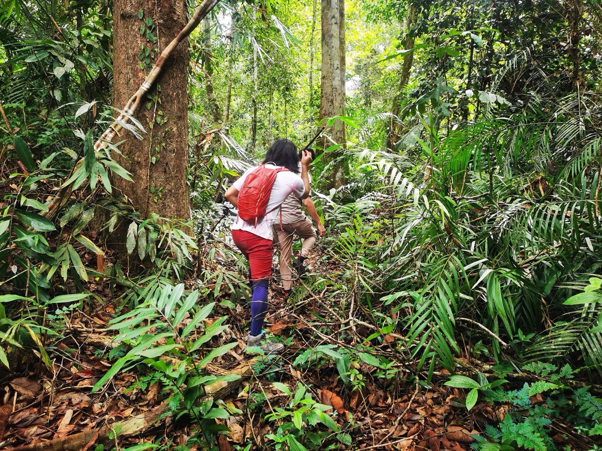

What ripens in the wet
- Tuesday’s scratch, Thursday’s problem. A palm spine opens your shin on the climb out of the river. In this climate the cleaning you do in the first hour decides whether day three involves a fever.
- Sweat that stops working. Saturated air means evaporation quits, and heat rides along on every easy stretch. Your partner goes quiet, then clumsy, then stops tracking the trail — cooling happens right there in the mud.
- The hand on the trunk. He grabbed a tree on the steep bit and something under the bark objected. Now there are hives, a wheeze, and an auto-injector somewhere in a dry bag.
Read these before the flight
Ordered for climates that don’t forgive:
- Heat Illness — humidity disables sweating — the spectrum arrives early here
- Bleeding & Wounds — in the tropics, wound cleaning is the main event, not the afterthought
- Bites & Stings — snakes, stingers, and marking the swelling edge with a time
- Patient Assessment — serial checks tell you when Tuesday’s wound has become today’s illness
- Evacuation — when help is days away, the decision comes first, not last
Then pressure-test it
Interactive scenarios — one decision at a time, tempting mistakes included, debrief at the end:
- Cool First — heat stroke, cooled where it happens
- Stop Peeking — pressure that doesn’t take breaks
- Sharpie on the Leg — snakebite minus the movie medicine
The certification question, honestly. “Wilderness First Aid” isn’t a regulated credential. No government body defines what a WFA card means — it means whatever the company that printed it says it means. What counts in front of a patient is whether you can do the work. This course teaches the work, free, and issues a record of completion — not a certificate, and we won’t pretend otherwise. Tropical disease — malaria, dengue, the waterborne stuff — is travel medicine, not first aid: see a travel clinic before you fly and take what they prescribe seriously. This course teaches the layer underneath — injuries and judgment — and if a trek operator requires a provider’s card, take their class. If nobody requires you to hold a card, what you need are the skills, not the laminate.
What this is
Fifteen lessons, a 40-question knowledge check, sixteen practice scenarios, a printable field reference card, and a kit checklist. Free, no account, nothing recorded about you, source on GitHub. It teaches decision-making, not hands-on skill — practice the hands-on parts on a real, padded, complaining friend.
Other long-haul people: desert & canyon-country explorers · polar & arctic expedition members · eco-tourists & adventure travel enthusiasts